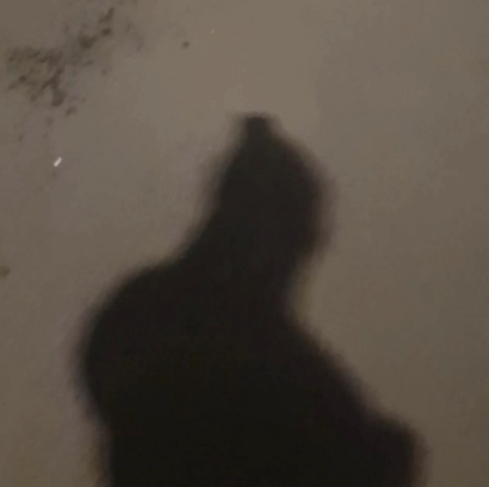
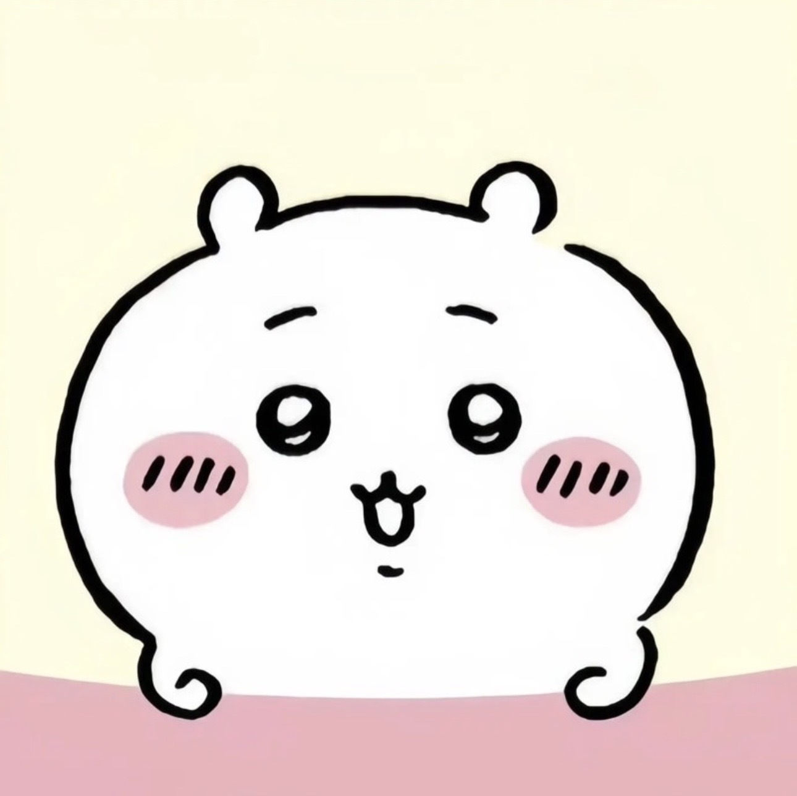
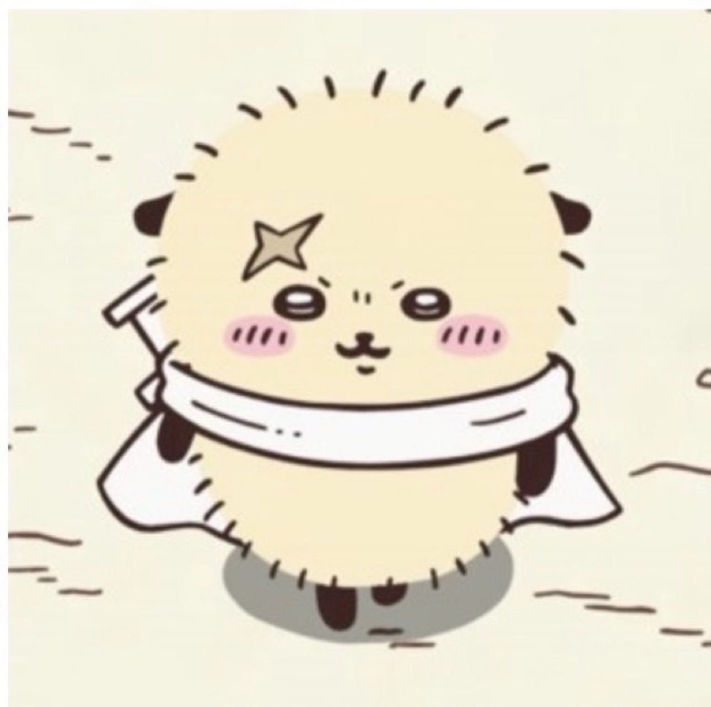
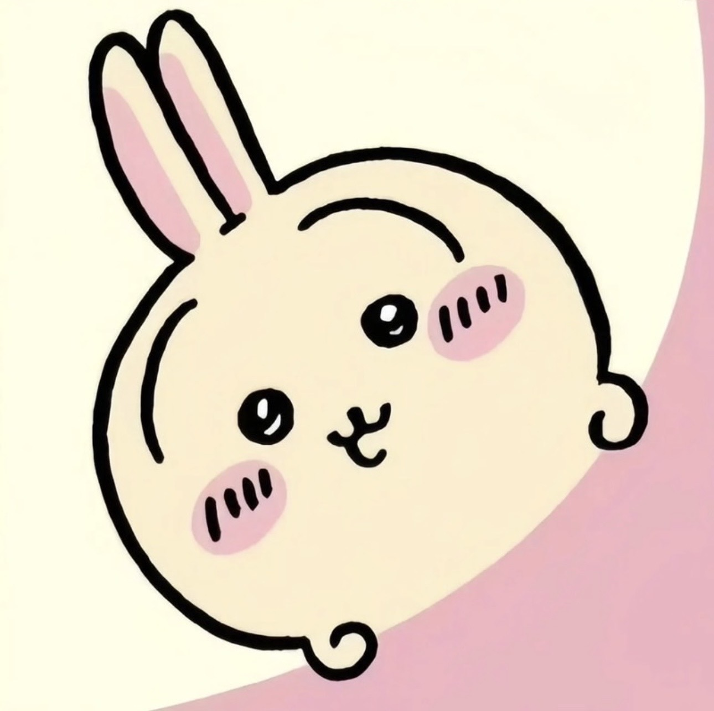
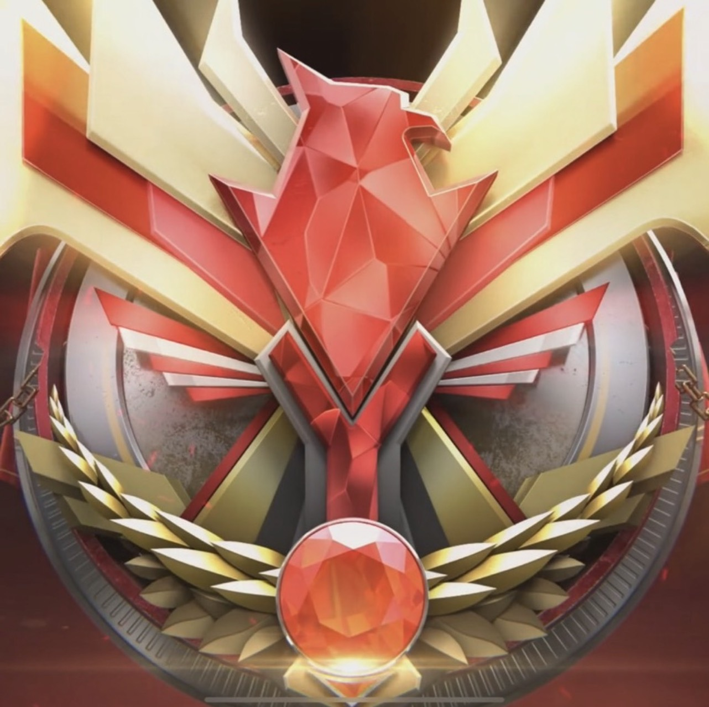

★Bi_藍冰團★《Roblox》

帆～
Bi_wuda0823
Roblox競爭者等級
180
個人簡介 :
無
團長
競爭者
排名表
狙擊手

張 O 寧 Bi_VIP1124
Roblox競爭者等級 : 159

劉 O 佑 Bi_liug1217
Roblox競爭者等級 : 87

劉思妤 Bi_Robbyg309bbb
Roblox競爭者等級 : 128
帆~ Bi_wuda0823
Roblox競爭者等級 : 180

群組公告
歡迎加入 ★Bi_藍冰團★！
有任何問題請找團長 帆～
本週活動
週六 20:00
團戰練習
週日 21:00
狙擊手對決
群組數據
6成員
139平均等級
180最高等級・帆～
開啟通知？
有人傳訊息、打電話來時通知你
我的
劉 O 佑
Bi_liug1217
Roblox競爭者等級
87
個人簡介 :
無
成員
個人簡介
設定
通知提醒
顯示我的等級